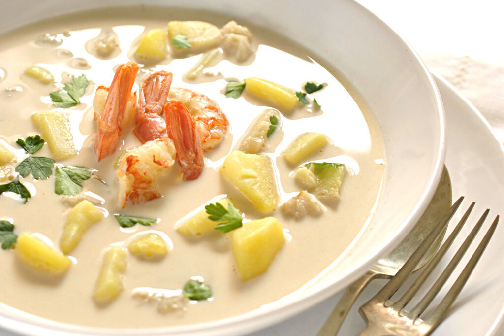

Tony's GazpachueloZ

"Con el tiempo, esta comida de gente humilde pasó a todas las casas de Málaga"
Ingredients:
- Potatoes
- Rice
- White fish, for example: Bacalao, Merluza
- Mayonnaise
- shrimp
- Eggs
- Extra virgin olive oil
- Water
Recipe:
-
We peel and cut the potatoes into equal-sized pieces. We peel the prawns or langoustines and set aside their bodies. We place the hake spine and head in a large pot along with the prawn or langoustine shells, the potato pieces, bay leaf, and parsley. We add the water and bring it to a boil. We simmer and skim for 30 minutes.
-
Meanwhile, we cut the hake into small pieces and set it aside along with the prawn or langoustine bodies. Once the broth is ready, we strain it and transfer it to another clean pot along with the potatoes, and we simmer for 10-12 minutes. We prepare a mayonnaise with the egg, oils, lemon juice, and a bit of salt, following the instructions in this recipe or using your preferred one.
-
We remove the pot from the heat and set aside a couple of ladles of the broth. We transfer the mayonnaise to a bowl and gradually add a small amount of the hot broth. This should be done slowly and gently stirred to prevent the mayonnaise from splitting. We repeat this process as many times as necessary to incorporate all of the reserved broth.
Nutricional information
- Fats
- So much